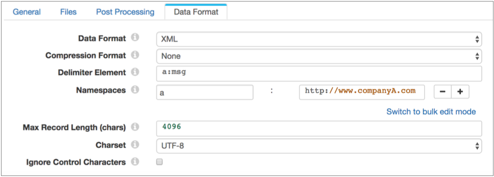
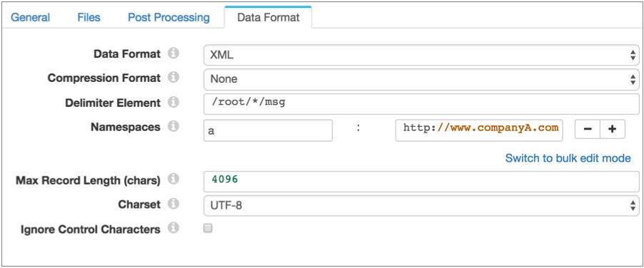
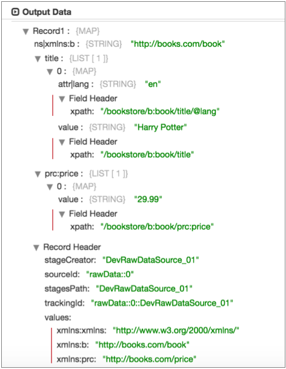

Reading and Processing XML Data
You can parse XML documents from an origin system with an origin enabled for the XML data format. You can also parse XML documents in a field in a Data Collector record with the XML Parser processor.
You can use the XML data format and the XML Parser to process well-formed XML documents. If you want to process invalid XML documents, you can try using the text data format with custom delimiters. For more information, see Processing XML Data with Custom Delimiters.
- Generate a single record
- To generate a single record from an XML document, do not specify a delimiter element.
- When you generate a single record from an XML document, the entire document is written to the record as a map.
- Generate multiple records using an XML element
- You can generate multiple records from an XML document by specifying an XML element as the delimiter element.
- You can use an XML element when the element resides directly under the root element.
- Generate multiple records using a simplified XPath expression
- You can generate multiple records from an XML document by specifying a simplified XPath expression as the delimiter element.
- Use a simplified XPath expression to access data below the first level of elements in the XML document, to access namespaced elements, elements deeper in complex XML documents.
Creating Multiple Records with an XML Element
You can generate records by specifying an XML element as a delimiter.
When the data you want to use is in an XML element directly under the root element, you can use the element as a delimiter. For example, in the following valid XML document, you can use the msg element as a delimiter element:
<?xml version="1.0" encoding="UTF-8"?>
<root>
<msg>
<time>8/12/2016 6:01:00</time>
<request>GET /index.html 200</request>
</msg>
<msg>
<time>8/12/2016 6:03:43</time>
<request>GET /images/sponsored.gif 304</request>
</msg>
</root>
Processing
the document with the msg delimiter element results in two records. Using XML Elements with Namespaces
When you use an XML element as a delimiter, Data Collector uses that exact element name that you specify to generate records.
If you include a namespace prefix in the XML element, you must also define the namespace in the stage. Then, Data Collector can process the specified XML element with the prefix.
For example, you use the a:msg element as the delimiter element and define the Company A namespace in the stage. Then, Data Collector processes only the a:msg element in the Company A namespace. It generates one record for the following document, ignoring data in the c:msg element:
<?xml version="1.0" encoding="UTF-8"?> <root> <a:msg xmlns:a="http://www.companyA.com"> <time>8/12/2016 6:01:00</time> <request>GET /index.html 200</request> </a:msg> <c:msg xmlns:c="http://www.companyC.com"> <item>Shoes</item> <item>Magic wand</item> <item>Tires</item> </c:msg> <c:msg xmlns:c="http://www.companyC.com"> <time>8/12/2016 6:03:43</time> <request>GET /images/sponsored.gif 304</request> </c:msg> </root>
In the stage, you define the Namespace property using the prefix "a" and the namespace URI: http://www.companyA.com.
The following image shows a Directory origin configured to process this data:

Creating Multiple Records with an XPath Expression
You can generate records from an XML document using a simplified XPath expression as the delimiter element.
Use a simplified XPath expression to access data below the first level of elements in the XML document. You can also use an XPath expression to access namespaced elements or elements deeper in complex XML documents.
<?xml version="1.0" encoding="UTF-8"?>
<root>
<data>
<msg>
<time>8/12/2016 6:01:00</time>
<request>GET /index.html 200</request>
</msg>
</data>
<data>
<msg>
<time>8/12/2016 6:03:43</time>
<request>GET /images/sponsored.gif 304</request>
</msg>
</data>
</root>
/root/data/msg
/root/*/msg
Using XPath Expressions with Namespaces
When using an XPath expression to process XML documents, you can process data within a namespace. To access data in a namespace, define the XPath expression, then use the Namespace property to define the prefix and definition of the namespace.
<?xml version="1.0" encoding="UTF-8"?> <root> <a:data xmlns:a="http://www.companyA.com"> <msg> <time>8/12/2016 6:01:00</time> <request>GET /index.html 200</request> </msg> </a:data> <c:data xmlns:c="http://www.companyC.com"> <sale> <item>Shoes</item> <item>Magic wand</item> <item>Tires</item> </sale> </c:data> <a:data xmlns:a="http://www.companyA.com"> <msg> <time>8/12/2016 6:03:43</time> <request>GET /images/sponsored.gif 304</request> </msg> </a:data> </root>
/root/a:data/msg /root/*/msg
Then define the Namespace property using the prefix "a" and the namespace URI: http://www.companyA.com.
The following image shows a Directory origin configured to process this data:

Simplified XPath Syntax
When using an XPath expression to generate records from an XML document, use a simplified version of the abbreviated XPath syntax.
- Operators and XPath functions
- Do not use operators or XPath functions in the XPath expression.
- Axis selectors
- Use only the single slash ( / ) child selector. The descendant-or-self double slash selector ( // ) is not supported.
- Node tests
- Only node name tests are supported. Note the following details:
- You can use namespaces with node names, defined with an XPath namespace prefix. For more information, see Using XPath Expressions with Namespaces.
- Do not use namespaces for attributes.
- Elements can include predicates.
- Predicates
- You can use the position predicate or attribute value predicate with elements, not both.
-
Use the following syntax to specify a position predicate:
/<element>[<position number>]
-
Use the following syntax to specify an attribute value predicate:
/<element>[@<attribute name>='<attribute value>']
- You can use the asterisk wildcard as the attribute value. Surround the value in single quotation marks.
- Wildcard character
- You can use the asterisk ( * ) to represent a single element, as
follows:
/root/*/msg
- You can also use the asterisk to represent any attribute value. Use the
asterisk to represent the entire value, as
follows:
/root/info[@attribute='*']/msg
Sample XPath Expressions
Here are some examples of valid and invalid XPath expressions:
- Valid expressions
- The following expression selects every element beneath the first top-level
element.
/*[1]/*
The following expression selects every value element under an allvalues element with a source attribute set to "XYZ". The allvalues element below a top-level element named root. Each element is in the abc namespace:/abc:root/abc:allvalues[@source='XYZ']/xyz:value
- Invalid expressions
- The following expressions are not valid:
- /root//value - Invalid because the descendent-or-self axis (“//”) is not supported.
- /root/collections[last()]/value - Invalid because functions, e.g. last, are not supported.
- /root/collections[@source='XYZ'][@sequence='2'] - Invalid because multiple predicates for an element are not supported.
- /root/collections[@source="ABC"] - Invalid because attribute the attribute value should be in single quotation marks.
- /root/collections[@source] - Invalid because the expression uses an attribute without defining the attribute value.
Predicates in XPath Expressions
- Position predicate
- The position predicate indicates the instance of the
element to use in the file. Use a position predicate when the element
appears multiple times in a file, and you want to use a particular instance
based on the position of the instances in the file, e.g. the first, second,
or third time the element appears in the file. Use the following syntax to specify a position predicate:
/<element>[<position number>]
- For example, say the contact element appears multiple times
in the file, but you only care about the address data in the first instance
in the file. Then you can use a predicate for the element as
follows:
/root/contact[1]/address
- Attribute value predicate
- The attribute value predicate limits the data to
elements with the specified attribute value. Use the attribute value
predicate when you want to specify an element with a particular attribute
values or an element that simply has an attribute value defined. Use the following syntax to specify an attribute value predicate:
/<element>[@<attribute name>='<attribute value>']
- You can use the asterisk wildcard as the attribute value. Surround the value in single quotation marks.
- For example, if you only wanted server data with a
region attribute set to "west", you can add the region
attribute as follows:
/*/server[@region='west']
Predicate Examples
/*/apps/collections
/*/apps[1]/collections
/*/apps/collections[@version='3']
/root/apps/collections[@version='*']
Including Field XPaths and Namespaces
You can include field XPath expressions and namespaces in the record by enabling the Include Field XPaths property.
When enabled, the record includes the XPath expression for each field as a field attribute and includes each namespace in an xmlns record header attribute. By default, this information is not included in the record.
<?xml version="1.0" encoding="UTF-8"?>
<bookstore xmlns:prc="http://books.com/price">
<b:book xmlns:b="http://books.com/book">
<title lang="en">Harry Potter</title>
<prc:price>29.99</prc:price>
</b:book>
<b:book xmlns:b="http://books.com/book">
<title lang="en_us">Learning XML</title>
<prc:price>39.95</prc:price>
</b:book>
</bookstore>
When you use /*[1]/* as the delimiter element and enable the Include Field XPaths property, Data Collector generates the following records with the highlighted field XPath expressions and namespace record header attributes:

XML Attributes and Namespace Declarations
Parsed XML includes XML attributes and namespace declarations in the record as individual fields by default. You can use the Output Field Attributes property to place the information in field attributes instead.
Place the information in field attributes to avoid adding unnecessary information in the record fields.
Parsed XML
When parsing XML documents with the XML data format or the XML Parser processor, Data Collector generates a field that is a map of fields based on nested elements, text nodes, and attributes. Comment elements are ignored.
<?xml version="1.0" encoding="UTF-8"?>
<root>
<a:info xmlns:a="http://www.companyA.com">
<sale>
<item>Apples</item>
<item>Bananas</item>
</sale>
</a:info>
<c:info xmlns:c="http://www.companyC.com">
<sale>
<item>Shoes</item>
<item>Magic wand</item>
<item>Tires</item>
</sale>
</c:info>
</root>
/root/*/sale
Then, you define both namespaces in the origin.
When processing the XML document using default XML properties, Data Collector produces two records, as shown in the following data preview of the origin: